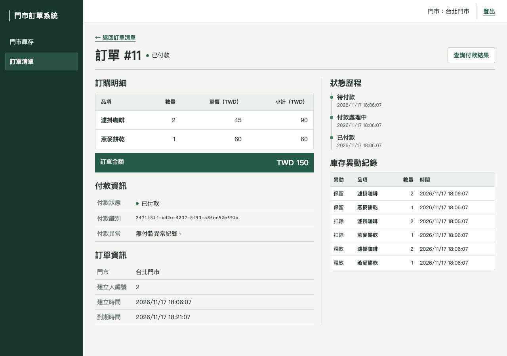
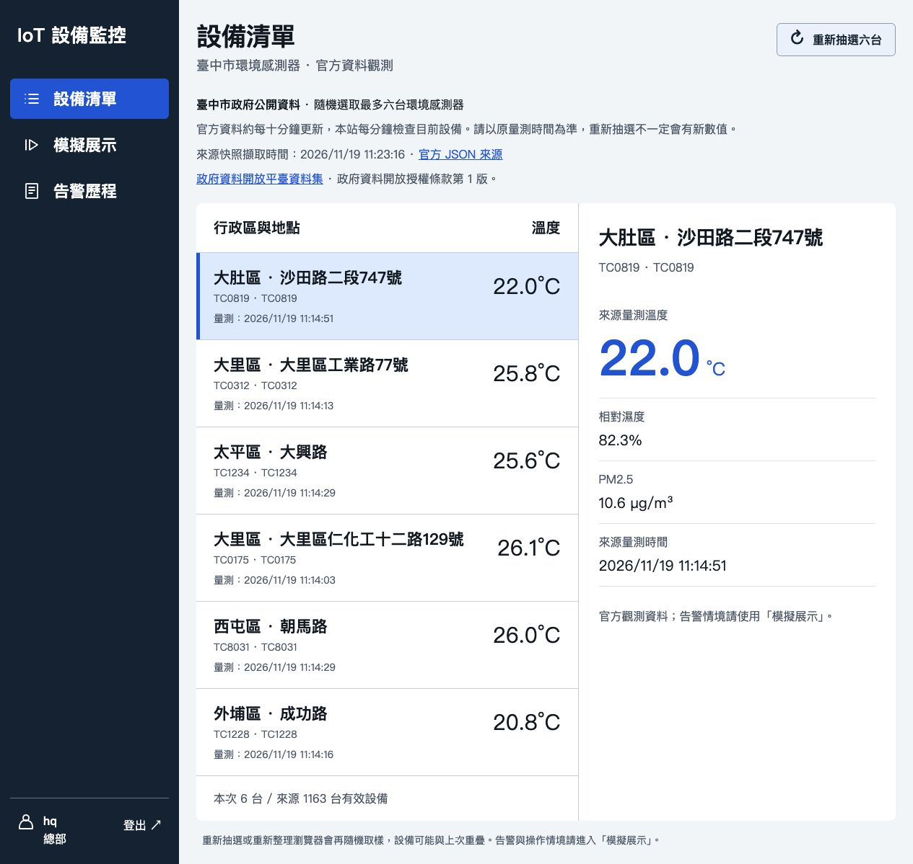

門禁、卡務與排班正式上線
以 C#／.NET 10 建置共用後端平台，供門禁與卡務使用。也負責勤務排班的需求釐清與後端規劃，系統已正式上線。
2026.04 – 2026.09
後端系統負責人
2025.03 – 2025.09
高級程式分析師
2023.11 – 2025.03
後端工程師 · MyFrees 福利社後台與 API
2017.05 – 2023.05
高級工程師 · 停車場管理系統
以 C#／.NET 10 建置共用後端平台，供門禁與卡務使用。也負責勤務排班的需求釐清與後端規劃，系統已正式上線。
維護每年累積近億筆事件的監控系統，透過改寫慢查詢與調整索引縮短等待時間，並確認調整前後的查詢結果一致。獨立開發停車計費，涵蓋分時費率、金額上限與各式優惠。
逐版盤點不相容套件、尋找替代方案或補齊功能。每次升級後驗證既有功能，確認穩定再往下一版。
我用同一套流程開發新功能、維護舊系統。AI 協助整理需求、比較方案、實作與檢查程式。我負責技術決策，並在每個階段確認結果。
先推演使用流程與例外情境，再請 AI 幫我整理問題、比較可能做法。需要業務判斷時，我整理成問題清單，由 PM 或業務確認。
把確認過的規則寫進規格，拆成有驗收條件的小任務。每個任務先確認能改哪些地方，開發中遇到新規則就回到規格確認。
在公司核准的工具與測試環境內使用 AI，只提供任務所需的程式與測試資料。正式環境憑證和部署權限由團隊保管。
我逐項核對變更、執行測試，確認符合規格。上線前，團隊可以查看規格、程式差異與測試結果，並依公司權限與流程核准。
各專案都有 GitHub 原始碼和本機啟動說明。
追蹤請購單從送審、主管核准到財務核准的流程與歷程。

整合訂單、庫存保留與模擬付款，可查看付款通知重送時的處理結果。

分開管理各品牌的點數，展示兌換時的扣點、流水與優惠券發放。

查看臺中市官方環境觀測資料，並在模擬場域測試設備告警。

成對匯入營業與收款 CSV，比對差額、追查來源並保留異常處理紀錄。

以知識庫回答問題，將回答與引用來源保存在工單。完整問答需 Gemini API Key。